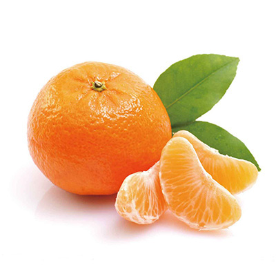
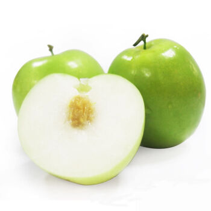
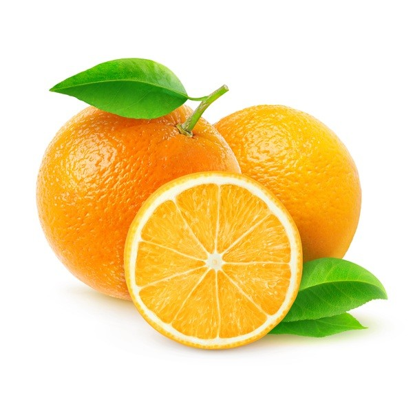

冬天的水果
橘子

採收季節:
橘子最主要的採收期為10月到隔年1月。
產地:
台灣很多地方都有種植橘子，新竹、苗栗、台中、南投、雲林、嘉義、台南都是主要產地。
營養價值:
橘子含有多種有機酸和維生素，對新陳代謝、老年人心肺功能有益；維生素C和類胡蘿蔔素等抗氧化物質，可以抗老防癌。
此外，橘子中的維生素與礦物質能預防血管破裂與血管硬化，調節血壓；橘皮成分的檸檬烯與揮發油能助痰排出。
橘子一天不要吃超過3顆，應避免短時間內過量食用，否則容易造成體重增加以及三酸甘油酯異常。
除此之外，糖尿病患者不宜一次吃太多顆的橘子，以免造成餐後血糖過高。
棗子

採收季節:
棗子最主要的採收期為10月起到隔年3月。
產地:
棗子的主要產地集中於高雄、屏東。
營養價值:
棗子的營養成分豐富，因此有人又稱之為「鮮活的維生素C丸」，且鮮棗的維生素P的含量在水果中也不遜色。
棗子含有大量的醣類物質，主要為葡萄糖，也含有果糖、蔗糖，以及由葡萄糖組成的低聚醣、阿拉伯聚醣及半乳醛聚醣等，具有較強的補養作用，能提高人體免疫功能，增強抗病能力。
經證實紅棗可以保護肝臟、鎮靜安神、抗過敏等功效。
柳丁

採收季節:
柳丁最主要的採收期為12月到隔年2月。
產地:
柳丁主要產地以雲林、台南、嘉義、南投為主。
營養價值:
柳丁的維生素C可保護細胞，對抗自由基；果肉所含的膳食纖維，則可以促進消化、改善便祕。
另外，所含的果膠能加速食物通過消化道，使脂質、膽固醇更快從糞便排泄出去；含有的檸檬酸，則可以幫助胃液對脂肪物質進行消化，並增進食慾。
柳丁在飯前或空腹時食用，會對胃產生不良影響，一次食用過量的柳丁，也會產生產生噁心、嘔吐的症狀。
有口乾咽燥、舌紅苔少等現象的人不能吃柳丁，否則容易傷肝氣、發虛熱。
回到水果王國
回 到 最 上 方